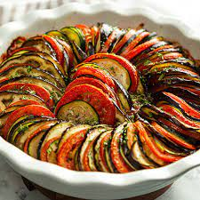

homemade-ratatouille

Description
Ingredients
- Garlic and oil
- Produce: You’ll need an eggplant, two zucchini, two tomatoes, fresh mushrooms, an onion, and a red or green bell pepper
- Parmesan
- Seasonings
Steps
- In a skillet, cook the garlic in olive oil. Add the eggplant, parsley, and salt.
- Cook until the eggplant is tender, then spread the mixture in a prepared casserole dish and sprinkle with Parmesan.
- Spread the zucchini on top and sprinkle with more cheese. Continue layering according to the instructions in Step 3.
- Bake the ratatouille in the preheated oven until the vegetables are tender.